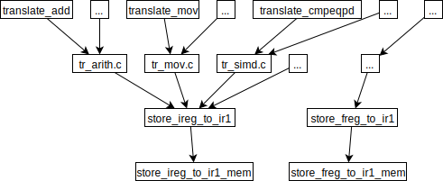
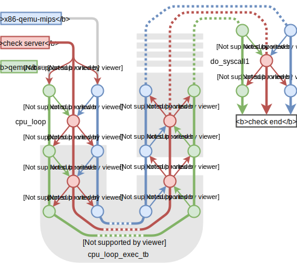

the design of Check
x86-qemu-mips -> check <- qemu
谢本壹 2020.1.9
Outline
- 使用的逻辑
- 新增代码&编译的逻辑
- 运行的逻辑
1. 使用的逻辑
目前版本实装的功能：
后续将实装的功能：
- 比较其他需要的寄存器（很容易，10^1分钟的量级）
- 比较写内存操作（还需要添加记录QEMU写内存操作的代码，10^0天的量级）
### 1. 使用的逻辑
check会将接收到的**参数**、**环境变量**原封不动地传给qemu和x86-qemu-mips。qemu和x86-qemu-mips照常输出。
一个例子 check检查结果一致
```shell
$ ./check ~/Codes/hellox86
Hello World
Hello World
check end
```
### 1. 使用的逻辑
一个例子 check发现不同
(目前的版本会打印出不同的TB的所有寄存器信息)
```shell
./check ~/Codes/helloworldx86
eax: 0, 0
ecx: 7fffb3c4, ffffb3c4
edx: 0, 0
ebx: 0, 0
esp: 7fffb3b0, ffffb3b0
ebp: 0, 0
esi: 1, 1
edi: 0, 0
eip: 8048763, 8048763
```
2. 新增代码&编译的逻辑

编译check功能的x86-qemu-mips:
configure --enable-x86tomips --enable-loongson-check --target-list="i386-linux-user"
编译check功能的qemu:
configure --enable-loongson-check --target-list="i386-linux-user"
比较内存
| x86-qemu-mips |
x86 -> mips |
| qemu |
x86 -> tcg |
共同点：mips和tcg都是RISC
合理的猜测：所有的x86访存指令在翻译时都将“収束”在某一个管理写内存的函数里
x86tomips翻译写内存相关指令的“収束”情况

IR2_OPND value_opnd, IR1_OPND *opnd1, bool is_xmm_hi
3. 运行的逻辑

进程间通讯采用message queue（系统调用mq_xxx）
类似网络里的“握手协议”
一个灰色背景部分表示一个TB块
待完善的内容
- esp，栈的不同步
- qemu的写内存操作的记录
- 一键编译
待解决的问题
准备在空闲时间完成这些内容，下周主要想去做新指令集的工作